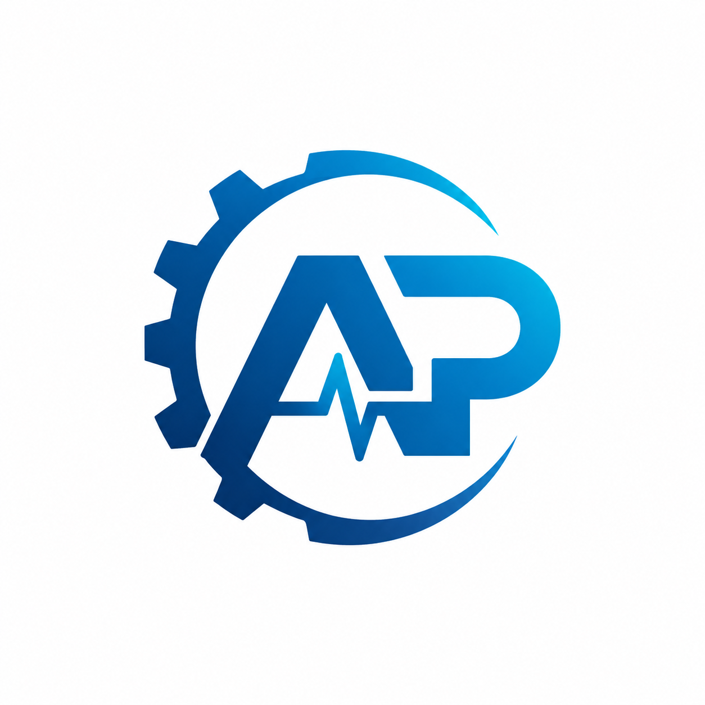
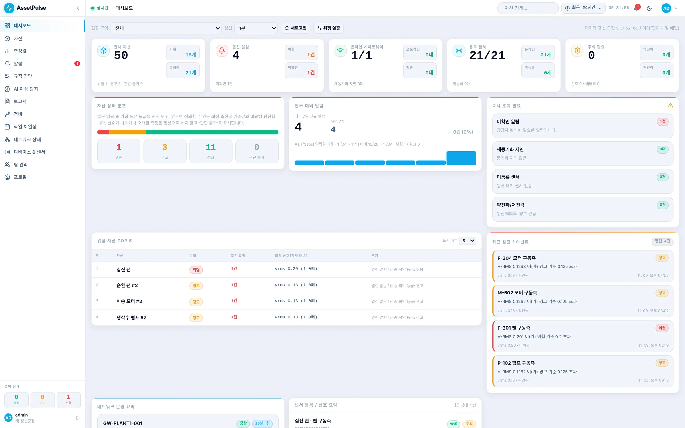
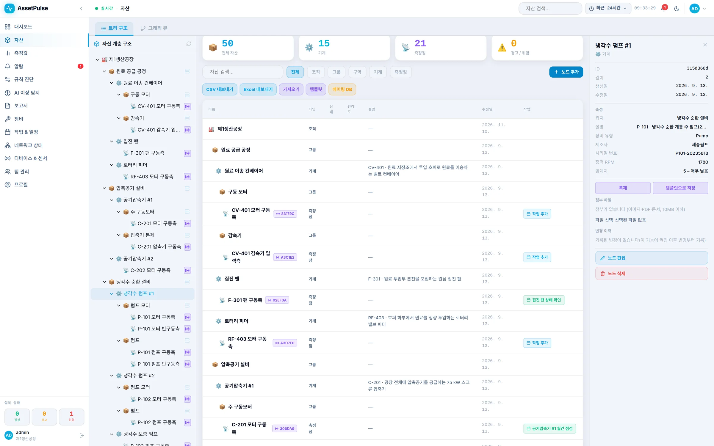
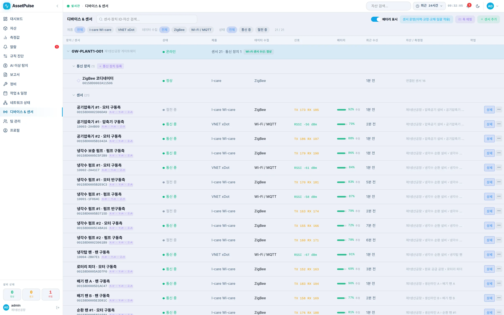
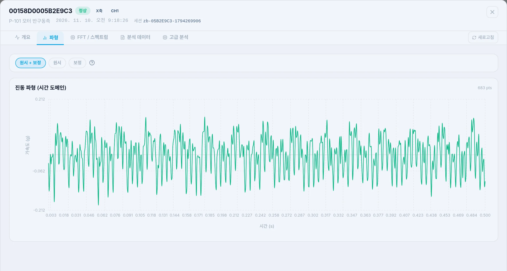
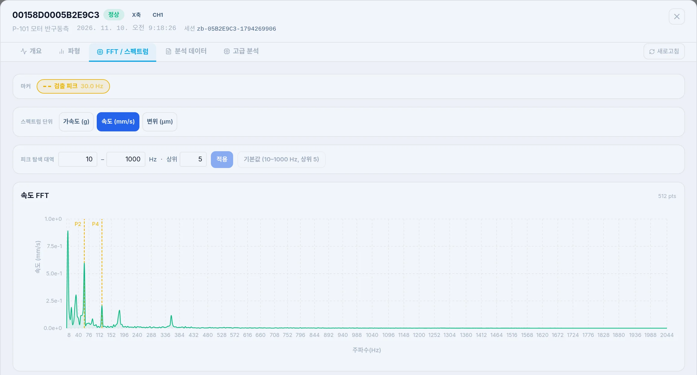
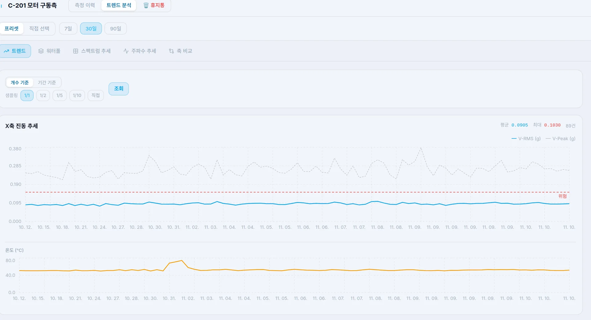
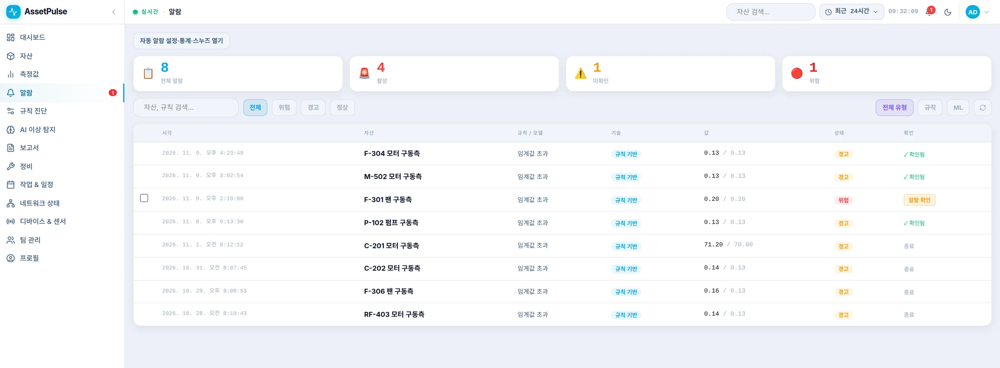
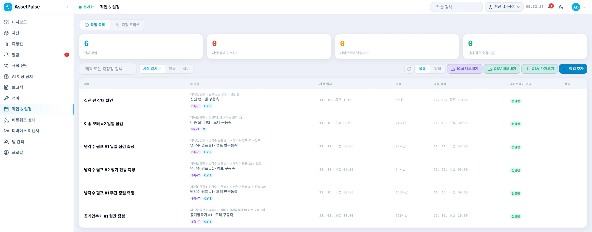
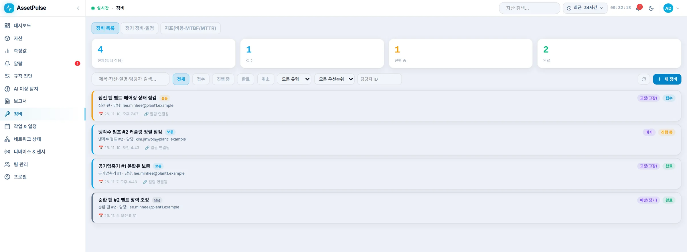

진동·온도 등 설비 데이터를 실시간으로 수집하고, 이상 징후를 조기에 발견하여 알람과 정비 계획까지 연결하는 산업용 상태감시 플랫폼

설비 데이터 → 상태 분석 → 이상 확인 → 알람 → 작업 등록 → 정비 이력
공장 → 공정 → 설비 → 측정점 → 센서 구조로 설비를 계층적으로 관리합니다.
ZigBee, Bluetooth(BLE), Wi-Fi/MQTT 등 센서에 맞는 수집 방식을 한 플랫폼에서 지원합니다.
진동·온도·배터리·신호 상태 등 주요 설비 상태를 한 화면에서 확인합니다.
Waveform, FFT, RMS, Peak 등 진동 분석 기능을 제공합니다.
설정한 기준 또는 분석 결과에 따라 이상 상태를 확인하고 알람으로 알려 줍니다.
설비 상태와 연계하여 정비 작업과 반복 점검 일정을 관리합니다.
공장부터 측정점까지 실제 현장 구조를 반영하여 설비 상태와 센서 데이터를 체계적으로 관리할 수 있습니다.

ZigBee 무선 센서, Bluetooth(BLE) 센서, Wi-Fi/MQTT 센서를 AssetPulse Gateway가 수집해 서버로 전달합니다. 연결된 센서의 배터리·신호 세기·마지막 수신 시각을 한 목록에서 확인합니다.

전체 자산 수와 정상·경고·위험 분포, 열린 알람, 센서 상태를 대시보드에서 바로 확인합니다. 열린 알람이 있는 설비부터 우선순위로 보여 줍니다.
측정 이력에서 RMS·Peak·온도를 확인하고, 같은 측정의 Waveform과 FFT 스펙트럼을 이어서 열어 볼 수 있습니다. 추세 화면에서는 설비별 변화를 시간 축으로 비교합니다.



기준을 넘은 측정은 알람으로 남고, 담당자가 확인·메모한 뒤 작업을 등록합니다. 정기 측정과 점검은 반복 일정으로 관리하며, 처리 이력이 정비 기록에 남습니다.



센서에서 서버까지, 하나의 구조로 연결됩니다.
고객 사내 서버에 설치하는 온프레미스 방식입니다.
현장 Gateway가 센서 데이터를 수집해 중앙 서버로 전달합니다.
공장 내부망에서 운영하며, 설치·업데이트용 오프라인 패키지를 제공합니다.
| 제품 형태 | 산업용 상태감시 플랫폼 |
|---|---|
| 구성 | AssetPulse Gateway / AssetPulse Server |
| 주요 대상 | 펌프 · 모터 · 팬 · 압축기 등 회전설비 |
| 수집 방식 | ZigBee / Bluetooth(BLE) / Wi-Fi(MQTT) |
| 분석 | Trend / Waveform / FFT / RMS / Peak |
| 운영 | On-Premise |
설비 환경과 센서 종류에 맞춰 도입 방법을 상담해 드립니다.
디씨테크 (DCTech)
대전광역시 유성구 테크노중앙로 47 센1413호
TEL. 042-935-9998 | 0504-348-2531
info@dctech.co.kr